Section 6.1 — Day 1
Factor $x^2+9x+20$.
For each factored function, list the zeros.
- $y=(x-3)(x+5)$
- $y=2(x+1)(x-4)$
- $y=-(x-6)(x+2)$
Spiral: Rewrite $y=x^2-8x+12$ in factored form and identify the zeros.
Formative Spiral: Use the diamond. The top number is the product of the two side numbers, and the bottom number is their sum. Fill in the missing cell(s).

Section 6.1 — Day 2
Find the missing factor: $x^2-11x+30=(x-5)(\,?\,)$.
Choose the expression that has a greatest common factor of $7x$ and no greater monomial common factor.
- $14x^2+21x$
- $7x^2+28x^2$
- $35x+49$
- $21x^3-14x^2$
Spiral: A table begins $2, 5, 10, 17, 26$ for consecutive inputs. Identify the repeated pattern that supports a family choice.
Formative Spiral: Use the diamond. The top number is the product of the two side numbers, and the bottom number is their sum. Fill in the missing cell(s).
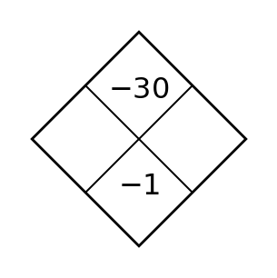
Section 6.1 — Day 3
Solve or interpret the quadratic situation for Solving Quadratics by Factoring. Show the algebra that supports your answer.
Factor and solve $x^2+x-20=0$.
Two students factored $12p^2-30p$.
Student A: $6p(2p-5)$
Student B: $3p(4p-10)$
Which expression is factored completely? Support your answer by identifying any remaining common factor.
Spiral: Use the blank coordinate plane to graph $h(x)=(x+1)^2-4$. Mark the translated vertex and at least two matching points.

Formative Spiral: Use the diamond. The top number is the product of the two side numbers, and the bottom number is their sum. Fill in the missing cell(s).
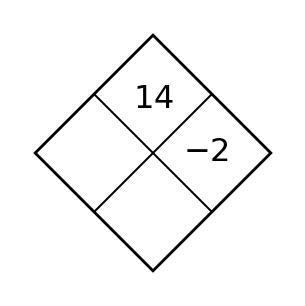
Section 6.2 — Day 1
Find the constant that completes each square.
- $x^2+8x+\Box$
- $x^2-10x+\Box$
Complete each square pattern.
- $x^2+12x+\_\_=(x+6)^2$
- $y^2-14y+\_\_=(y-7)^2$
- $4x^2+\_\_+9=(2x+3)^2$
Spiral: Write an equation for a translation of $y=x^2$ whose vertex is $(3,-5)$. Then give two points that should appear on the graph.
Formative Spiral: Use the diamond. The top number is the product of the two side numbers, and the bottom number is their sum. Fill in the missing cell(s).
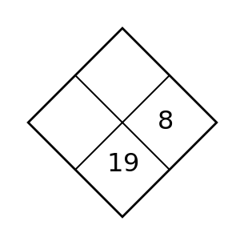
Section 6.2 — Day 2
Convert $x^2-4x+1$ to vertex form.
For each pair of numbers, write the product and the sum.
- $3$ and $5$
- $-4$ and $7$
- $-6$ and $-2$
- $8$ and $-1$
Spiral: A graph is translated right $5$ and up $4$. Describe how the key point $(0,0)$ moves.
Formative Spiral: Use the diamond. The top number is the product of the two side numbers, and the bottom number is their sum. Fill in the missing cell(s).

Section 6.2 — Day 3
Solve or interpret the quadratic situation for Completing the Square. Show the algebra that supports your answer.
Rewrite $y=x^2+2x+6$ in vertex form, then interpret the minimum.
Find a value of $k$ so that $kx^2+20x$ has greatest common factor $10x$. Explain why your value works.
Spiral: Compare the parent and transformed absolute value graph. Identify the reflection, stretch, and translation.
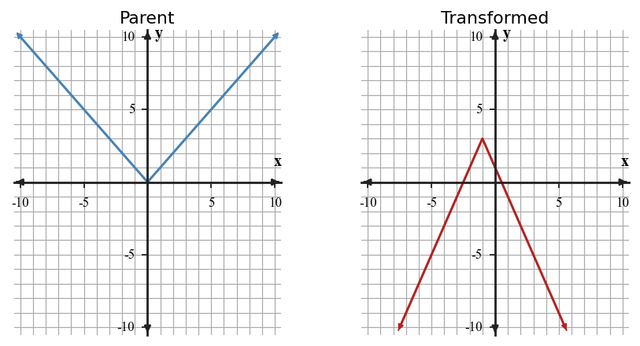
Formative Spiral: Use the diamond. The top number is the product of the two side numbers, and the bottom number is their sum. Fill in the missing cell(s).

Section 6.3 — Day 1
Identify $a$, $b$, and $c$ for each equation.
- $x^2-5x+6=0$
- $2x^2+3x-4=0$
Identify the $a$, $b$, and $c$ values in each trinomial $ax^2+bx+c$.
- $2x^2+5x+3$
- $6x^2-x-2$
- $x^2+x-72$
Spiral: Classify the family for the table and explain what happens to first and second differences.
| $x$ | 0 | 1 | 2 | 3 |
|---|---|---|---|---|
| $y$ | 1 | 4 | 9 | 16 |
Formative Spiral: Use the diamond. The top number is the product of the two side numbers, and the bottom number is their sum. Fill in the missing cell(s).
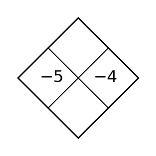
Section 6.3 — Day 2
Explain why $a$ cannot be $0$ in the quadratic formula.
Decide whether each trinomial appears factorable over the integers by checking product-sum possibilities.
- $x^2-x-6$
- $2x^2+5x+7$
- $3x^2+13x+4$
Spiral: Name two transformations shown by $y=-\frac{1}{2}(x+4)^2-3$.
Formative Spiral: Use the diamond. The top number is the product of the two side numbers, and the bottom number is their sum. Fill in the missing cell(s).
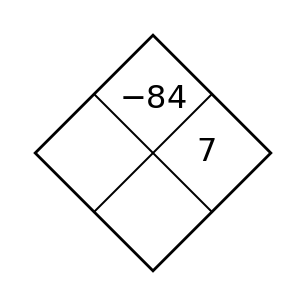
Section 6.3 — Day 3
Solve or interpret the quadratic situation for Quadratic Formula. Show the algebra that supports your answer.
Solve $2x^2-7x+1=0$ exactly.
Factor each expression completely. Be sure to look for any common factor first.
- $5x^3+13x^2-6x$
- $6t^2-26t+8$
- $6x^2-24$
Spiral: Simplify $(3x^2+4x-7)+(2x^2-9x+5)$.
Formative Spiral: Use the diamond. The top number is the product of the two side numbers, and the bottom number is their sum. Fill in the missing cell(s).
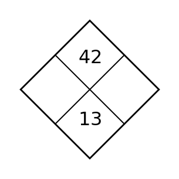
Section 6.4 — Day 1
Choose factoring, square roots, completing the square, or quadratic formula as the most efficient method.
- $(x-4)(x+9)=0$
- $x^2+5x+6=0$
For each form, state the feature that is easiest to read.
- $y=(x+2)(x-7)$
- $y=3(x-4)^2+1$
- $y=2x^2-5x+9$
Spiral: For $y=2(x-3)^2-5$, identify the vertex, axis of symmetry, and whether the graph opens up or down. Then calculate two symmetric points to verify the features.
Formative Spiral: Use the diamond. The top number is the product of the two side numbers, and the bottom number is their sum. Fill in the missing cell(s).
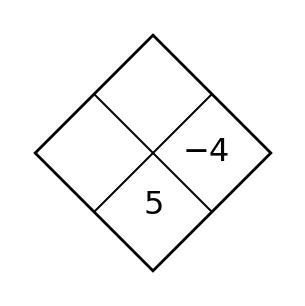
Section 6.4 — Day 2
State one disadvantage of using factoring on $x^2+2x-7=0$.
Complete each square pattern.
- $x^2+12x+\_\_=(x+6)^2$
- $y^2-14y+\_\_=(y-7)^2$
- $4x^2+\_\_+9=(2x+3)^2$
Spiral: Explain what it means for two polynomial expressions to be equivalent.
Formative Spiral: Use the diamond. The top number is the product of the two side numbers, and the bottom number is their sum. Fill in the missing cell(s).
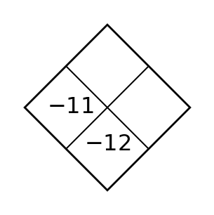
Section 6.4 — Day 3
Solve or interpret the quadratic situation for Choosing and Defending Solution Methods. Show the algebra that supports your answer.
Write a method-selection rule for equations in factored form, then apply it to $(3x+1)(x-4)=0$.
Use the area model structure to explain why $x^2+7x+12$ factors as $(x+3)(x+4)$, not $(x+2)(x+6)$.
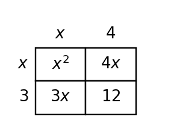
Spiral: Rewrite $y=x^2-8x+12$ in factored form and identify the zeros.
Formative Spiral: Use the diamond. The top number is the product of the two side numbers, and the bottom number is their sum. Fill in the missing cell(s).
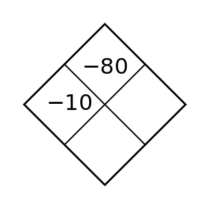
Section 6.5 — Day 1
Identify the vertex, intercepts, or domain feature most useful for the context.
- $h(t)=-16t^2+48t$
- $A(x)=x(20-x)$
For $y=-(x+2)^2+3$, state the maximum value and where it occurs.
Spiral: Use the table to identify the zeros, vertex, and axis of symmetry. Then write a possible vertex-form equation and verify it by computing the output at one $x$-value outside the table.
| $x$ | -2 | -1 | 0 | 1 | 2 |
|---|---|---|---|---|---|
| $y$ | 0 | -3 | -4 | -3 | 0 |
Formative Spiral: Use the diamond. The top number is the product of the two side numbers, and the bottom number is their sum. Fill in the missing cell(s).
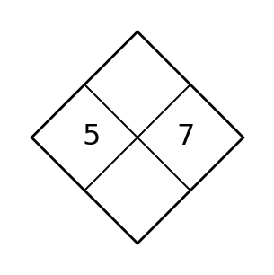
Section 6.5 — Day 2
Find the axis of symmetry of $R(p)=-2(p-5)^2+80$.
Factor each polynomial if possible.
- $x^2-8x+16$
- $9m^2-1$
- $k^2-12k+20$
Spiral: What graph feature is represented by $k$ in $y=a(x-h)^2+k$?
Formative Spiral: Use the diamond. The top number is the product of the two side numbers, and the bottom number is their sum. Fill in the missing cell(s).
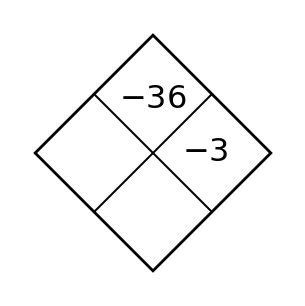
Section 6.5 — Day 3
Solve or interpret the quadratic situation for Quadratic Modeling and Optimization. Show the algebra that supports your answer.
Find the break-even points of $P(x)=-x^2+12x-20$.
Factor each expression completely. Use a special pattern when possible.
- $64x^2-y^2$
- $4x^2+12x+9$
- $9x^2-24x+16$
- $x^2-3x+18$
Spiral: An expression is written $f(x)=(x-4)^2+7$. Use the form to identify the family, build three symmetric points around the key point, and explain how those points confirm the graph feature made easiest by the form.
Formative Spiral: Use the diamond. The top number is the product of the two side numbers, and the bottom number is their sum. Fill in the missing cell(s).